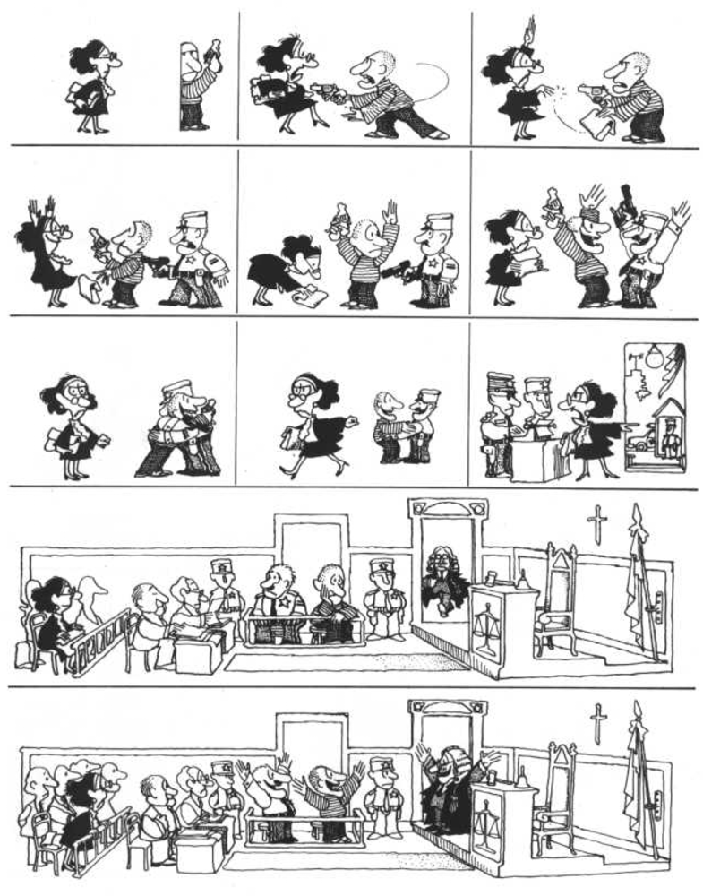

Interpretar, sea una poesía, una obra musical, una teoría científica o... un chiste, implica manejar convenciones. Interpretar es obligado para lograr la comprensión; cuando ésta se logra la información encaja perfectamente como en un mosaico o un rompecabezas, no quedan huecos ni traslapes.
No hay comprensión sin tanteos, sin esfuerzos, sin perseverancia, sin categorías, sin errores, sin rectificaciones.

¿Capta todos los detalles del chiste? ¿Qué convenciones usa?
Cuadro 1. La mujer está vestida con austeridad, podría ser profesora (confía en las instituciones).
Cuadro 2. Una línea indica movimiento rápido del brazo izquierdo del asaltante; note los trazos de las caras.
Cuadro 4. La mujer se alegra porque llega el policía.
Cuadros 6 a 8. La mujer se sorprende e indigna porque policía y asaltante son amigos.
Cuadros 9 y 10. La mujer hace la denuncia, en el juzgado están la bandera, el crucifijo, el juez con toga y peluca. Escritorio con campanilla, martillo, dibujo de balanza (imparcialidad de juicio).
Cuadro último. Policía, asaltante y juez son amigos. Mujer con cara de sorpresa resignada.